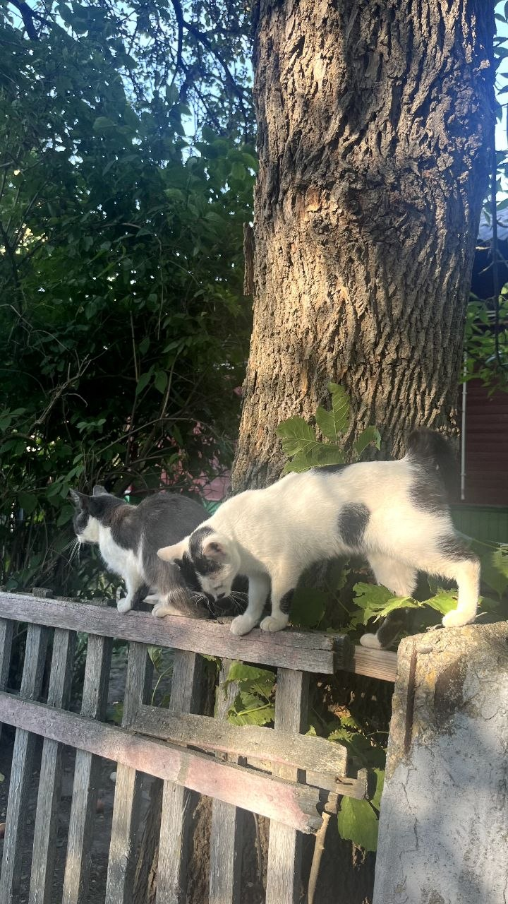
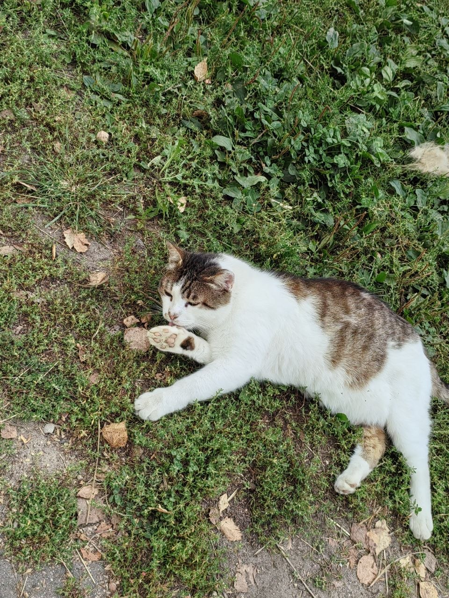
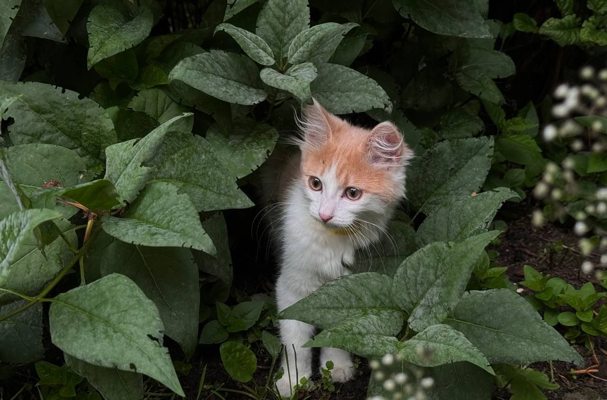

Каждый уважающий себя кот должен знать свои обязанности и беспрекословно их выполнять. Ведь кот — это настоящий хозяин дома!
А теперь давайте посмотрим на наших пушистых друзей!



Кошки могут спать до 12–16 часов в сутки. Наверное, поэтому они так хорошо справляются с обязанностью отдыхать за своих хозяев!
Кот — главный в доме!